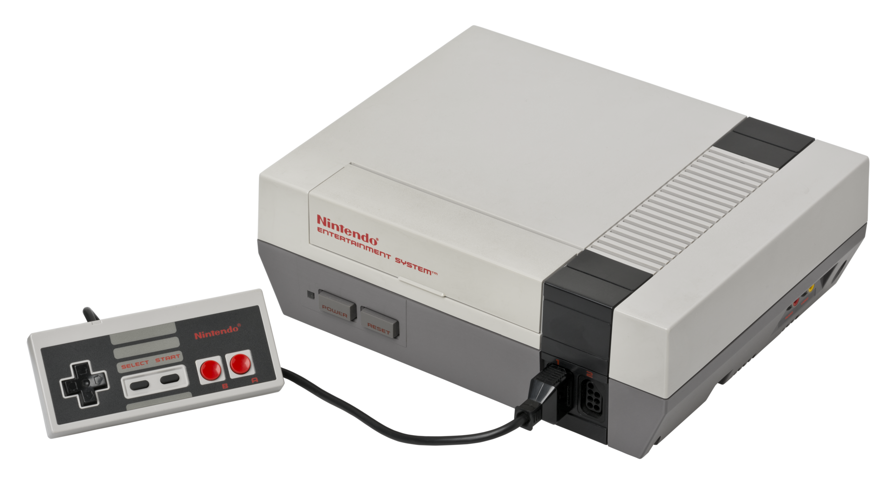
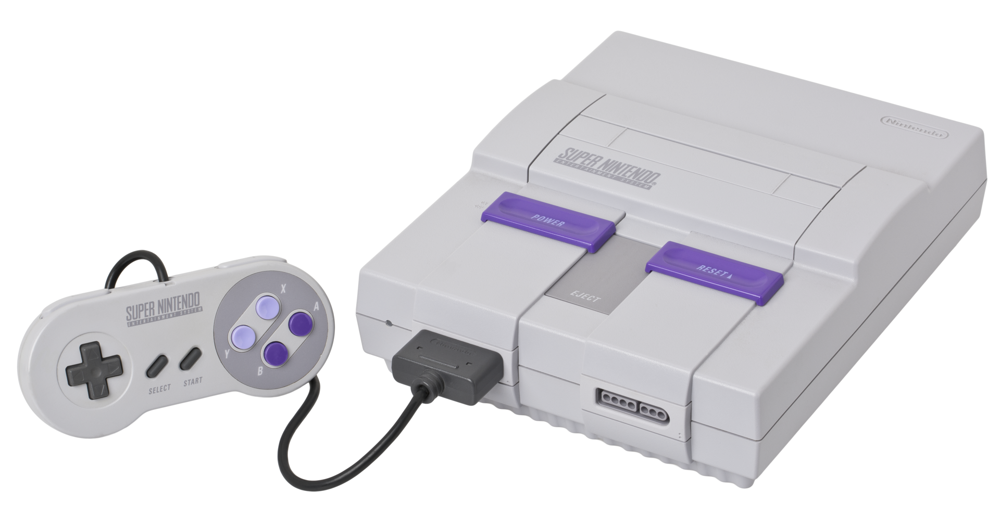
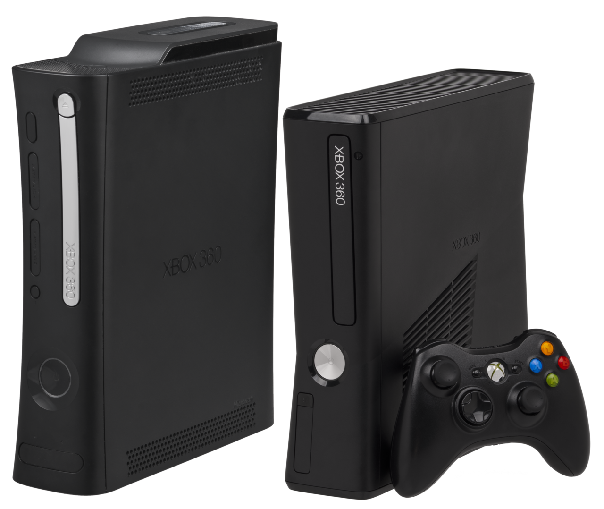
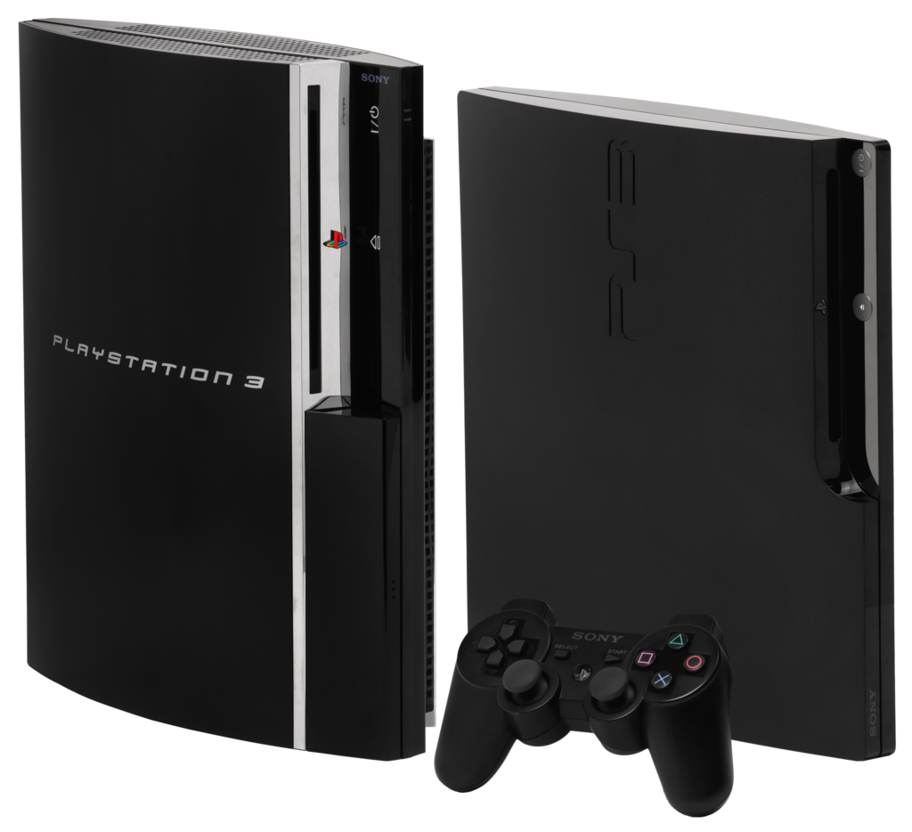

Краткое описание консоли с приведенной картинкой
 Впервые консоль появилась на японском рынке в 1983 году под названием Famicom, а затем, переименованная в NES, вышла в Европе и США в 1985 году. Новинка оказалась исключительно удачной и сумела завоевать практически весь американский и японский рынок.Консоль появилась с большим пакетом игр, среди которых самым известным и продаваемым стало семейство игр Super Mario Bros. Марио стал талисманом корпорации Nintendo. Всего, по официальным данным, было продано более 60 млн приставок и более 500 млн игр. Поскольку выход консоли произошёл вскоре после кризиса игровой индустрии, многие критики именно ей приписывают возрождение игрового рынка и открытие третьего поколения видеоприставок, так как удачные аппаратные характеристики и богатая библиотека игр вызвали интерес как у потребителей, так и у разработчиков, отвернувшихся было от игровой индустрии после краха.
 Super Nintendo Entertainment System стала второй домашней консолью Nintendo вслед за NES. В SNES были представлены улучшенные графические и звуковые возможности по сравнению с другими консолями того времени. Кроме того, разработка дополнительных чипов, которые встраивались в картридж игры, позволяла ей оставаться конкурентоспособной на мировом рынке даже после выхода следующего поколения игровых приставок. Консоль приобрела популярность во многих странах, став самой продаваемой 16-битной приставкой, несмотря на упорную конкуренцию в Северной Америке со стороны Sega.


 Xbox 360 — вторая по счёту игровая приставка компании Microsoft, которая последовала за Xbox. Конкурентами Xbox 360 среди игровых платформ седьмого поколения являются PlayStation 3 от Sony Computer Entertainment и Wii от Nintendo. Некоторые из основных функций Xbox 360 представлены сервисом Xbox Live, позволяющим играть через Интернет, а также загружать разнообразный контент — видеоигры, демоверсии, трейлеры, музыку, ТВ-шоу и т. п. Xbox 360 была официально анонсирована на канале MTV 12 мая 2005 года, а более детальная информация о приставке была представлена в том же месяце на выставке Electronic Entertainment Expo (E3). Все доступные на время выпуска приставки были успешно проданы в каждой стране, кроме Японии. По состоянию на июнь 2010 года, существует 41,7 миллиона приставок Xbox 360 по всему миру. В 2009 году на веб-сайте компьютерной тематики IGN Xbox 360 была названа шестой величайшей игровой приставкой всех времён, попав в список из 25 позиций. На крупнейшей выставке игр Electronic Entertainment Expo 2013 был представлен обновлённый дизайн Xbox 360.

 PlayStation 3 — игровая приставка седьмого поколения, третья в семействе игровых систем PlayStation (не считая PlayStation Portable). С помощью PS3 можно играть, смотреть фильмы, слушать музыку, отправлять электронную почту и просматривать веб-страницы. С самого момента выпуска приставкой поддерживается большинство игр для консолей предыдущего поколения, PlayStation и PlayStation 2. Главными конкурентами консоли являются Xbox 360 от Microsoft и Wii от Nintendo. Изначально выход PS3 планировался на 2005 год, но разработчики, которые имели доступ к версии приставки того времени, заявили, что решение ещё слишком сырое (например, в той версии совсем не было GPU, его добавили в самом конце подготовки к запуску). Выход PS3 в Японии состоялся 11 ноября 2006 года, 17 ноября приставка появилась в Северной Америке в первом квартале 2007 года), в марте 2007 года — в Европе, а потом в России. К сентябрю 2012 года по всему миру было продано 66,1 млн приставок PlayStation 3. К ноябрю 2012 года было продано более 70 млн экземпляров консоли по всему миру. К январю 2013 года было продано более 77 млн экземпляров консоли по всему миру. Количество игр, доступных для консоли, превысило 3590 штук, а общий тираж проданных игр — 595 млн копий. В ноябре 2013 года компания заявила, что общее количество проданных консолей достигло отметки в 80 млн, а портфель игр составил 4332 штуки (в их число не входят игры, которые доступны только в PSN). На апрель 2015 года Sony реализовала 87 млн экземпляров PlayStation 3 в различных модификациях — оригинальной FAT, Slim и SuperSlim. Производство PS3 было прекращено 29 мая 2017 года.